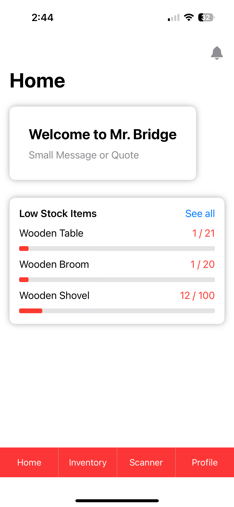
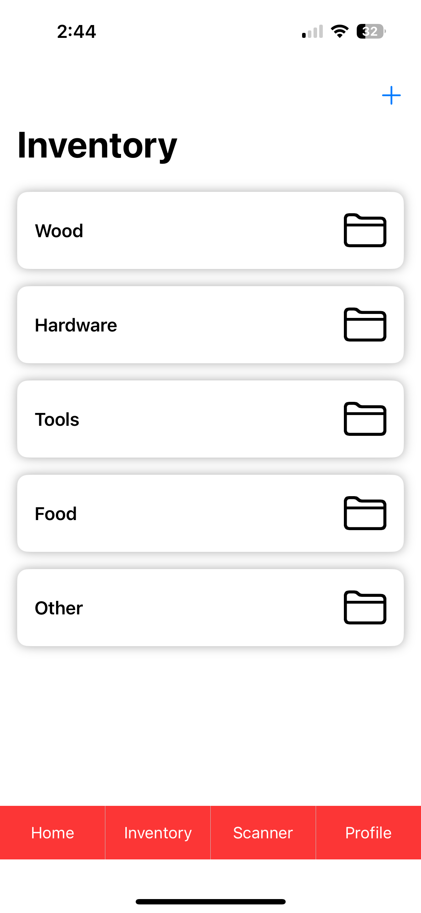
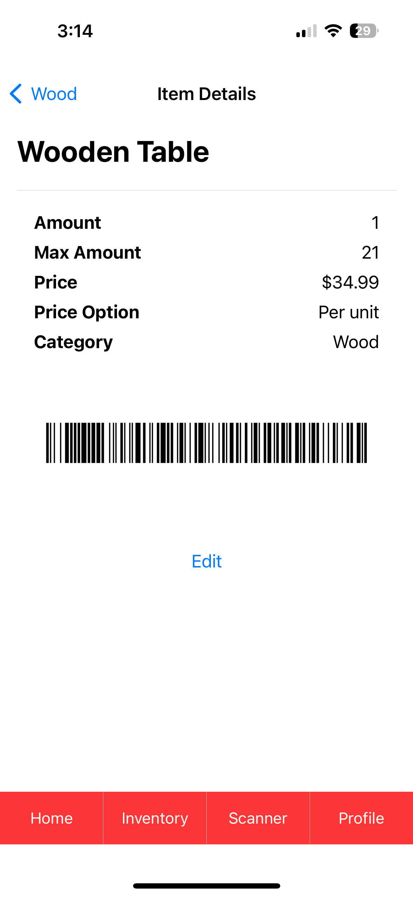
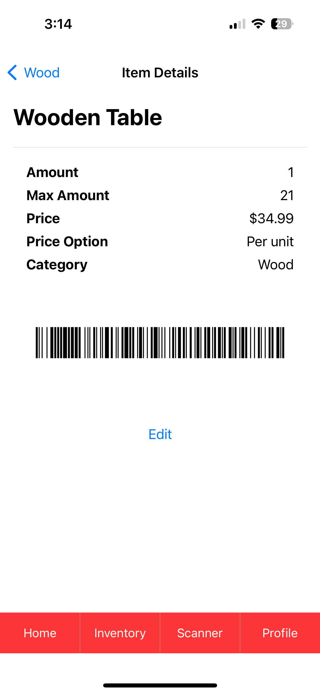
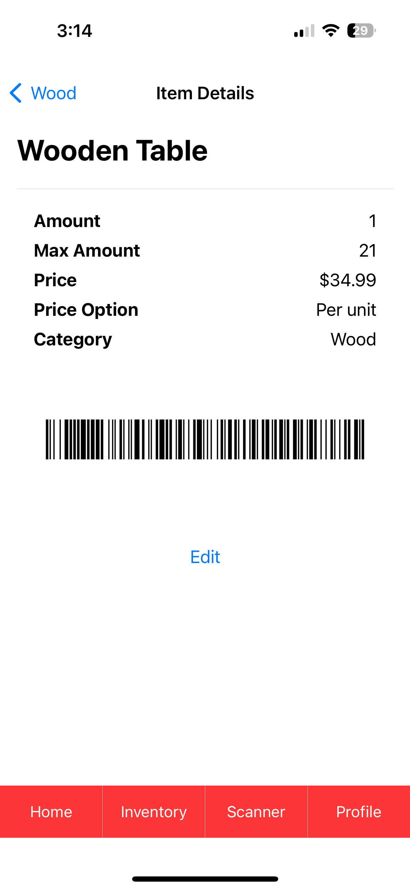

-
The home screen greets users with a welcoming message and provides quick access to key features. One important highlight is the 'low quantity products' section, where users can easily view items that need restocking. The screen also introduces the toolbar, offering seamless navigation to home, inventory, the barcode scanner, and user profile. This toolbar is accessible throughout the entire app, but is first seen here on the home screen.


-
This screen provides users with an organized view of inventory items, categorized for easy browsing and searching. Users can filter items by specific categories, allowing for quick access to relevant groups of products. This layout makes it simple to navigate through the inventory and locate specific items based on their classifications.
-
Secure User Authentication: Integrated Firebase Authentication to securely
manage user logins and registrations, supporting role-based access control
that restricts or allows editing capabilities based on user roles (e.g., Admin vs. Standard User).
-
Mobile Barcode Scanning: Incorporated mobile scanning technology to streamline
item data entry and verification processes, significantly reducing manual data
entry errors and enhancing operational efficiency.

-
Personalized User Profiles: Implemented user profile customization, allowing users
to upload and manage their profile pictures through Firebase Storage, enhancing the
user interface and personalization.
-
Real-Time Notifications and Alerts: Developed notification mechanisms via
UserNotifications to alert users about low stock items twice daily, encouraging
proactive inventory management.
 
